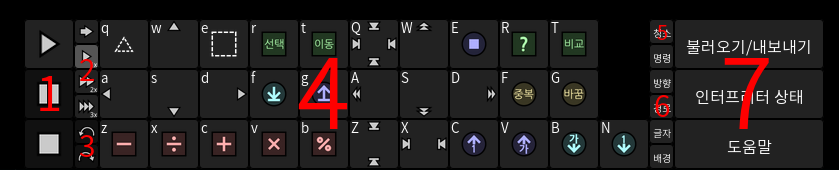
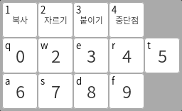

이 설명서에서는 AheuiChem의 사용법을 설명합니다.
AheuiChem은 아희라는 프로그래밍 언어를 실시간으로 분석하여 시각적으로 보면서 코드를 간편하게 편집할 수 있게 도와주는 개발 도구입니다.
아희는 2차원 코드 공간 안에서 커서가 자신이 가리키는 명령을 수행하고 그 명령이 가리키는 방향으로 이동하는 한글로 된 난해한 프로그래밍 언어입니다.
자바스크립트로 개발되어 HTML5를 지원하는 웹 브라우저가 설치되어 있는 컴퓨터에서는 설치 없이 간편하게 사용할 수 있습니다.
AheuiChem은 HTML5를 지원하는 브라우저는 모두 지원합니다. 공식적으로 지원하는 브라우저는 다음과 같습니다:
외의 다른 브라우저도 동작할 수 있지만, 공식적으로 작동을 보증하지는 않습니다.
AheuiChem은 웹 응용 프로그램입니다. 따라서 따로 설치가 필요하지 않습니다.
웹에 배포된 AheuiChem을 실행하려면 해당 주소로 이동하면 됩니다. 로컬에 배포된 버전을 실행하려면, index.html을 웹 브라우저에서 열면 됩니다.
AheuiChem의 인터페이스는 크게 세 부분으로 나눠집니다:
작업 공간은 현재 작업하고 있는 코드가 표시되는 공간입니다.
코드 크기가 작업 공간의 크기보다 클 때에는 좌클릭 + 드래그로 코드를 끌어서 이동할 수 있습니다.
만약 맨 오른쪽이나 맨 아래의 빈 공간을 클릭하면 코드 공간이 거기까지로 확장됩니다. 하지만 해당 행이나 열이 모두 무의미한 명령으로 쓰여지면 해당 행이나 열이 지워집니다.
사이드 바는 주로 텍스트 정보가 표시되는 공간입니다. 어떤 사이드 바가 열려있느냐에 따라 사용 목적이 달라집니다.

작성한 아희 코드를 텍스트로 내보내거나 불러올 수 있는 부분입니다.
위의 텍스트 상자에 코드를 붙여넣고 '불러오기' 단추를 눌러 코드를 작업 공간으로 불러올 수 있습니다.
또, '내보내기' 단추를 눌러 텍스트 상자에 작업 공간에서 작업한 결과물을 내보낼 수 있습니다.

아희 인터프리터의 상태를 확인할 수 있는 부분입니다.
위에서부터 아래로:

개발하는데 도움이 되는 페이지와 제작자 정보를 수록한 부분입니다.

도구 상자에서는 실행 흐름 제어, 코드 편집, 레이어 보이기/숨기기 등 대부분의 편집 기능을 제어할 수 있습니다.
도구 상자는 크게 7가지 부분으로 나누어 집니다:
인터프리터의 실행 상태를 제어하는 부분입니다.
스페이스 바 버튼을 눌러 인터프리터의 실행을 재개하거나 일시 정지할 수 있습니다.
또한, 명령에 중단점이 설정된 경우 해당 지점에서 일시 정지됩니다. 이 경우에도 재개 버튼을 눌러 실행을 계속할 수 있습니다.

인터프리터의 실행 속도를 제어하는 부분입니다.
클릭하여 선택된 항목은 다른 단추보다 밝은 색으로 빛납니다.

실수로 편집했을 때 편집을 취소하거나 되돌릴 수 있는 단추입니다.
이 명령은 Ctrl+Z나 Ctrl+Y 단축키로도 실행할 수 있습니다.
실행을 취소할 항목이 없어 명령을 실행할 수 없을 때에는 단추가 어두워집니다.

작업 공간에 덮어 씌울 명령을 선택할 수 있는 부분입니다.
한 글자는 '명령'과 '방향' 두 가지를 가지고 있습니다. 따라서, '명령'과 '방향'은 서로 덮어 씌워지지 않습니다.
선택된 항목은 해당 단추가 다른 단추보다 밝게 빛납니다.
명령 단추 왼쪽 위에 있는 키보드 단추를 눌러 해당 명령을 선택할 수도 있습니다.
단추를 눌러 사용되지 않는 행이나 열을 제거할 수 있습니다.
빈 행이나 열이 아닌 사용되지 않는 행이나 열인 점에 유의하세요 - 주석 등의 정보가 삭제될 수도 있습니다.
같은 이유에서 이 명령을 자주 호출하는 것은 권장되지 않습니다. 코드를 정리하고 싶을 때만 사용하세요.

작업 공간에 표시될 레이어를 보이거나 보이지 않게 토글합니다.
단추를 눌러 해당 레이어를 토글할 수 있습니다. 보이지 않는 레이어에 해당하는 단추는 다른 단추들보다 밝게 빛납니다.

표시할 사이드 바를 선택할 수 있는 단추입니다.
선택된 사이드 바에 해당하는 단추는 밝게 빛납니다. 해당 단추를 다시 눌러 사이드 바를 닫을 수 있습니다.

코드 글자에 우클릭하면 나타나는 메뉴로 해당 글자의 데이터를 편집할 수 있습니다.
맨 첫 행에 있는 명령이 아닌 아래의 글자나 숫자들은 해당 글자의 데이터를 설정합니다.
단추 왼쪽 위에 있는 키를 눌러 해당 단추를 누를 수도 있습니다.
해당 글자를 복사해 다른 공간에 붙일 수 있는 단추입니다.
해당 글자에 중단점을 토글합니다.
중단점이 설정되면 인터프리터가 해당 글자를 지나갈 때 명령어 실행이 잠시 멈추게 됩니다.
AheuiChem에서는 단축키를 '스택'으로 관리합니다. 컨텍스트 메뉴가 열리거나 닫힐 때 스택에 단축키 이벤트 리스너가 push나 pop됩니다.
아래에서는 AheuiChem에서 사용할 수 있는 단축키들을 나열합니다.
좌측 위에 표시되는 단축키는 모두 해당 단추를 누른 것으로 취급합니다.